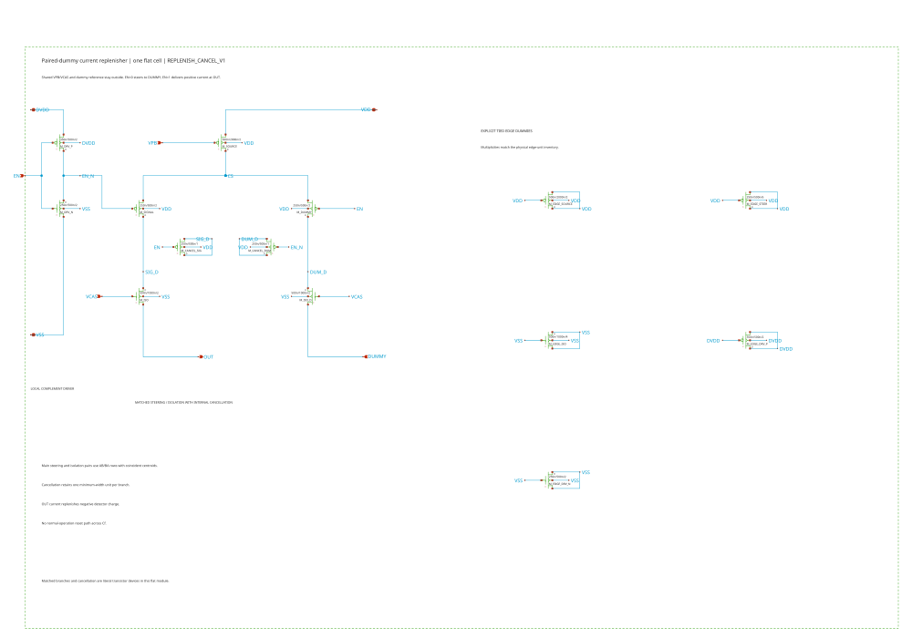
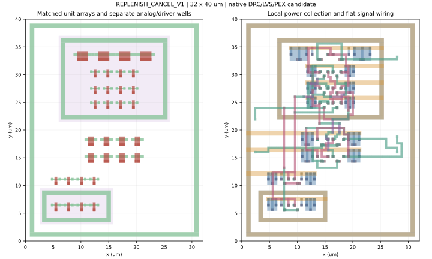

Architecture and detector replay · Physical CSA · Physical comparator
Physical current replenisher
Loading pinned native evidence…
Modules/REPLENISH_CANCEL_V1 is one flat 32 × 40 µm cell, with 32 MOS units, 16 tied edge dummies, two coincident steering/isolation pair centroids and 809 via cuts. Shared bias generation remains outside the repeated module.
Charge calibration and its limits
One independent 10 MHz training record at each temperature fixes the bias and charge gain before rate, history and compliance holdouts. The physical quantum is approximately \(0.5\,\mathrm{fC}\), or \(3.12\times10^3\) electrons. Source and PEX retain their own measured gains, with their absolute difference visible.
SUM = 0.898/0.902 V remains within 3.6% of the frozen physical gain at 50 MHz. The wider ±20 mV checks fail, varying by about 35–36%. A repeated gain correction does not remove this state dependence. Reverse-current lobes reach about 1.287 fC warm and 1.824 fC cold; interaction with actual CSA input impedance remains an assembly check.
Whole-cycle power and pulse-width dependence
Upstream work includes both finite supply feeds, one implemented mirror-reference fixture and positive external control/clamp work. Each supply has 100 pF decoupling. Average over twelve whole cycles and retain reservoir-energy change without subtraction. Shared generator/distribution and the complete controller are separate chip costs.
Idle physical-fixture draw is about 0.543 / 0.585 µW, warm / cold. Three- and five-ns commands characterize different acquisition modes and need their own calibrated charge.
| Implementation / temperature / rate | Net charge (fC) | Fixture power (µW) | Reverse lobe (fC) |
|---|
Inspect every complete native trace
Training, sparse pulses, idle, compliance failures and width variants remain available. Zoom axes together to inspect delivered current, integrated charge, EN, SUM and supplies. These are noise-off deterministic interference tests; they establish no intrinsic-noise statistics.
Human-readable circuit and physical construction




Scope and evidence
Factory room-temperature model and exploratory 77 K model. Native mask/port correspondence, cell-local DRC disposition, strict LVS and complete PEX are module checks. Chip density/fill, manual review, shared distribution, stochastic noise, full-chain reconstruction and measured cryogenic silicon remain separate work. The rejected initial 1 mA symbol-default fixture contributes no accepted electrical data.